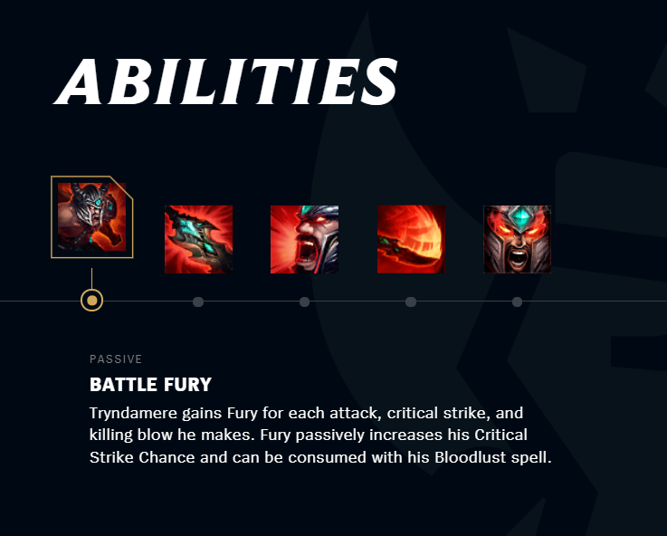
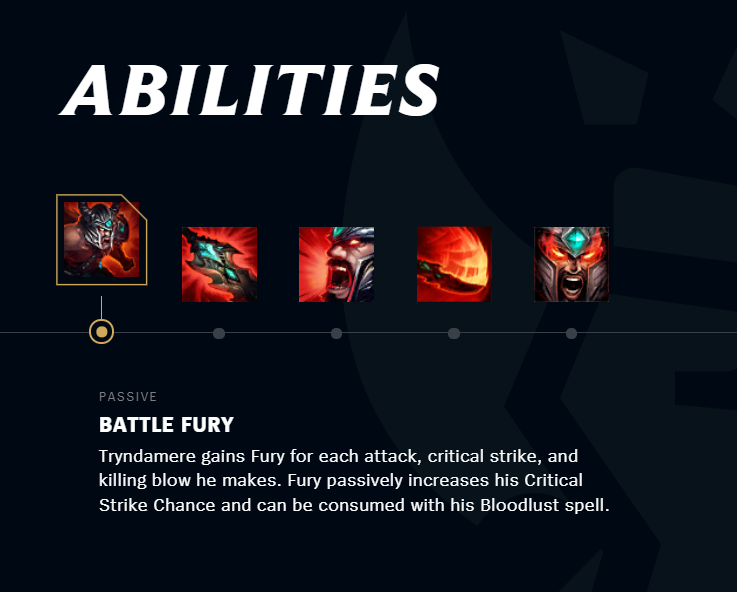

THE BARBARIAN KING
Tryndamere
Fueled by unbridled fury and rage, Tryndamere once carved his way through the Freljord, openly challenging the greatest warriors of the north to prepare himself for even darker days ahead. The wrathful barbarian has long sought revenge for the annihilation of his clan, though more recently he has found companionship with Ashe, the Avarosan warmother, and a home with her people. His almost inhuman strength and fortitude is legendary, and has delivered him and his new allies countless victories against the greatest of odds.